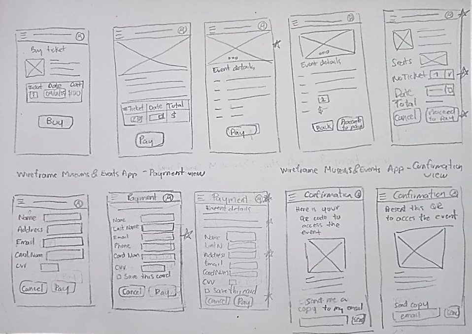
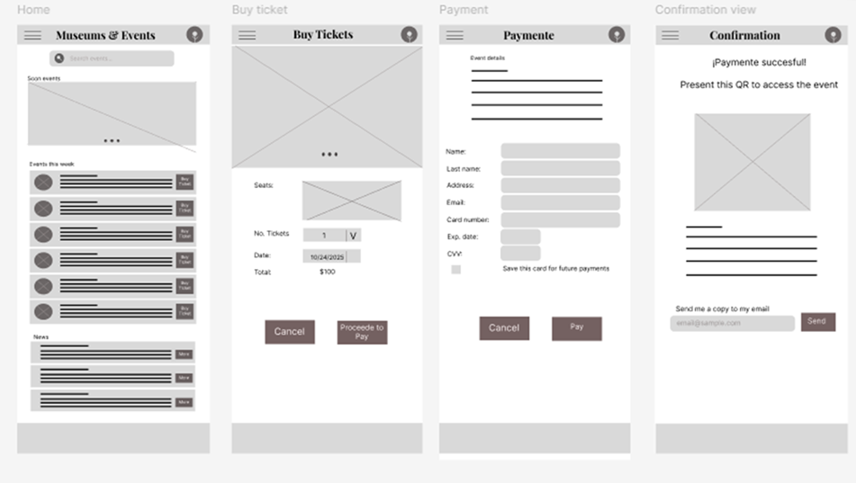
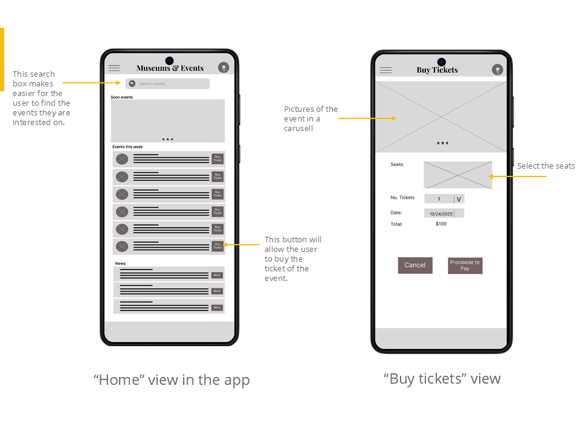

A mobile app designed to help users discover museums, art exhibitions, and cultural events in their city. The app focuses on improving event visibility and helping users stay informed through personalized notifications and a simple ticket-purchasing experience.
Art students and people interested in cultural events often miss exhibitions, workshops, and museum activities because event communication is limited and scattered across different platforms. Many museums also lack accessible and user-friendly digital experiences, making it difficult for users to quickly discover relevant events or receive reminders.
Design a mobile app that allows users to:
UX/UI Designer
I worked on the end-to-end design process, including:
Figma
User research: Summary
I conducted interviews with art students and people interested in museums and cultural events to better understand their behaviors, frustrations, and needs.
Key Findings
I started by sketching multiple layout ideas for the ticket purchase and payment flows. This helped me quickly explore navigation patterns and prioritize the most intuitive user experience before moving into digital design.

After validating the initial concepts, I created digital wireframes in Figma to define the app structure, user flow, and content hierarchy. The design focused on:


I created a low-fidelity prototype to test the core user journey, including: